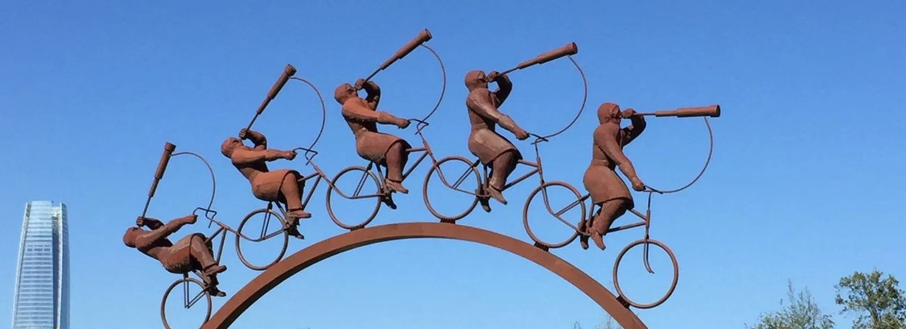

Teaching/Service
Teaching
- Graduate lectures in dynamical systems (Université de Montréal, 2020–2022) and computational neuroscience (University of Göttingen, 2013–2015). Sample lecture notes on entropy in dynamical systems.
- Designed the socio-economics curriculum of ClimateMatch Academy (Jupyter Book), taken by students in more than 100 countries, plus a two-part talk on transition narratives (1, 2).
- Organized the Göttingen computational neuroscience summer school (2012–2015) and lectured at others (slides on modelling principles, LACONEU 2014).
- Physics teaching assistant at the University of Toronto, with David Harrison.
- Mentoring: I lead a research team of graduate and undergraduate students, and have co-supervised graduate students in Göttingen, Paris and Montréal.
Service
Outreach